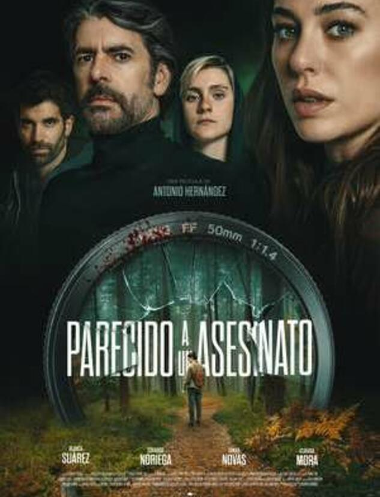

L'Eva va pensar que havia deixat enrere el seu passat. Una nova família juntament amb Nazario, escriptor d'èxit, i la seva filla, Alicia i un nou començament. Però les ombres mai desapareixen, només esperen el moment exacte per a atacar. José, el seu exmarit, ha tornat… i ara ningú està fora de perill.